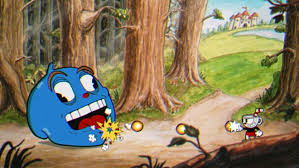

여기서부터 포트폴리오 시작입니다.
포트폴리오의 내용
2. 캡스톤 디자인 현황
3. 미래에 대한 이력서 (간단)
캡스톤 디자인 현황 입니다.
현재 3인 1조로 이루어진 팀에서 조장을 맡고있고 unity를 이용해서 2D 플랫포머 게임을 만들어 볼 생각입니다. 현재 저희 조는 아직 실력이 좋지 않아서 완벽하게 게임을 구현하지 못하 지만 간단하게 테트리스, 총알 피하기 등등 여러 게임을 조작해보고 만들어보고 있습니다. 간단한 사진을 첨부하겠습니다.
다시 목차로 돌아가고 싶으시면클릭하세요.
이름 : 조욱현 생년월일 : 1998년 8월 8일 (25세)
초등학교 : 수리초등학교
중학교 : 공도중학교
고등학교 : 안성두원공업고등학교
대학교 : 대전대학교(재학 중)
| 자격증 | 연도 |
|---|---|
| 엑셀 | 2021년 |
| 파워포인트 | 2010년 |
| 워드프로세서 | 2013년 |
| 포토샵 | 2016년 |
| 컴퓨터활용능력1급 | 2020년 |
| 토익(700점) | 2019년 |
안녕하십니까. 이번에 oo기업에 면접을 보게된 조욱현입니다. 저의 장점은 남들보다 빠르게 업무에 적응하는 능력과 빠른 상황대처능력 맡은 업무를 최선을 다하는 열정있는 모습 모르는 것은 알 때 까지 해결하는 능력인 것 같습니다.
저의 단점으로는 빠르게 처리하려다 하는 실수와 영어가 조금 부족한 점인 것 같습니다. 하지만 실수는 빠르게 대처가능한 대처능력으로 이겨내고 영어 또한 공부로 계속 단점들을 보완하고 있습니다.
어렸을 때 부터 어른들에게 싹싹하다는 소리를 많이 들어왔고 현재에도 어른들 공경과 윗분들에 대한 예의가 항상 바르고 모범적인 행동으로 술, 담배 등은 하지 않으며 욕설 조차 잘 하지 않기 때문에 인성 또한 바르다고 생각합니다.